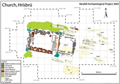
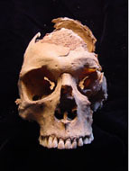
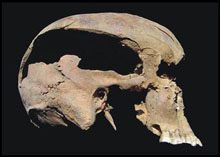
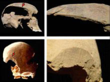
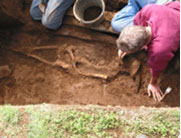

Burial at Hrísbrú & Evidence of Violence
Many of the skeletons in the cemetery are well-preserved. They provide evidence of the health status and living conditions of Iceland’s early settlers. One skeleton appears to be that of a homicide victim.
This middle aged man’s skull exhibits massive cranial trauma caused by an axe blows. One to the side of the head that would have resulted massive bleeding and brain damage. A second blade wound to the back of the head that would have insured rapid death. This person’s coffin contained two large rocks. Rocks may have been placed on top of a victim of violence as a traditional defense against the problem of the “walking dead.”
Several of the graves included iron fittings called clench bolts used in ship construction. These finds suggest that some people in the Hsísbrú graveyard were buried with pieces of Viking style boats in a ritual tradition surviving from the pagan period.


Anterior view of skull excavated from Hrísbrú.
Lateral view of skull excavated from Hrísbrú showing the massive axe wound.
Cut marks from bladed weapons on the excavated skull at the Hrisbru churchyard.
Davide Zori excavating a burial at the Hrísbrú graveyard.